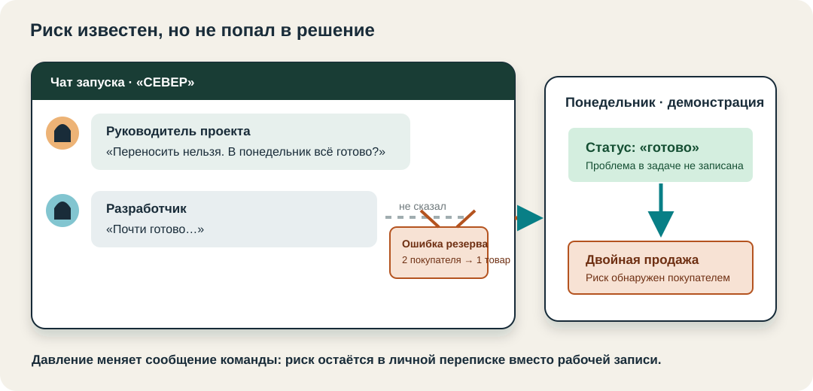
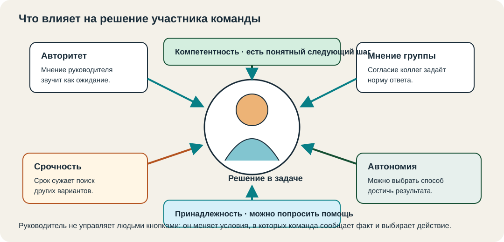
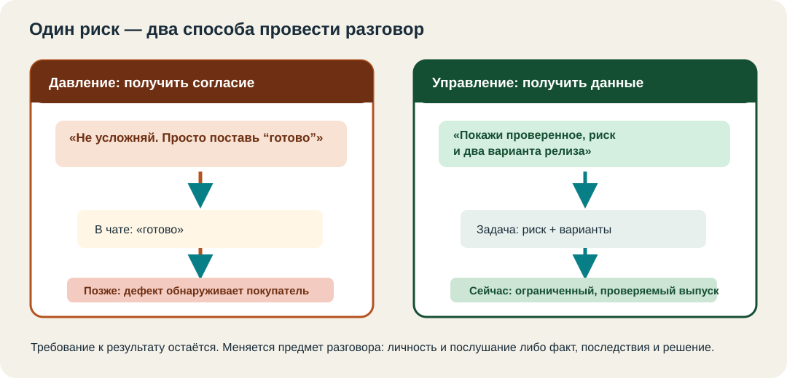
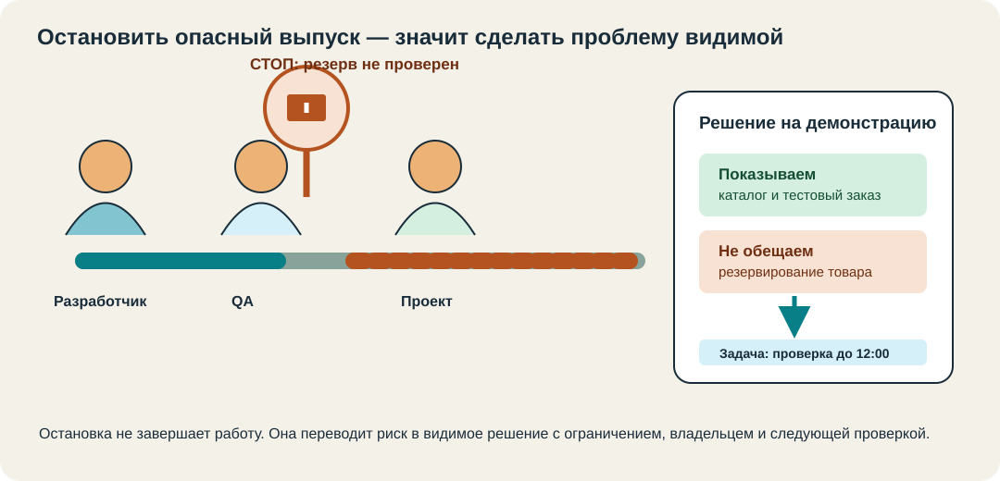

Авторитет
Люди чаще принимают мнение человека с формальной властью или признанной экспертизой.
Рабочее применение: руководитель отделяет своё предположение от факта и просит проверить его.Управление программными проектами
08 / 18 · 90 минут
Разбираем, почему люди молчат о риске, соглашаются с нереальным сроком и повторяют поведение группы. Учимся видеть рабочие механизмы влияния и отделять управление от манипуляции.
Разработчик видит, что резервирование товара не прошло нагрузочную проверку. Руководитель пишет в общий чат: «Нельзя снова переносить. Нужен ответ: успеем или нет?»
Один и тот же факт можно обсудить по-разному. В первом варианте команда скрывает риск, чтобы не выглядеть слабой. Во втором — называет факт, оценивает последствия и выбирает решение.
Психология управления — не набор секретных кнопок. Это знание о том, как на решение влияют власть, эмоции, привычки группы и способ поставить вопрос.
Фраза «я просто спросил» может звучать как ожидание, угроза или приглашение к совместному поиску. Смысл определяется контекстом и предыдущим опытом команды. На сцене ниже разработчик знает об ошибке, но в чат попадает только безопасный ответ «почти готово».

Левая часть схемы показывает сообщение руководителя и неполный ответ разработчика. Пунктир ведёт к ошибке, которая не была записана. Справа формальный статус «готово» заканчивается двойной продажей. Такое развитие задаёт четыре шага, которые происходят между сигналом и действием.
Психологическая безопасность не означает отсутствие требований или конфликтов. Это рабочее условие, при котором участник может сообщить об ошибке, несогласии или незнании без унижения и наказания за сам факт сообщения. Руководитель всё равно принимает решение, но получает более точную картину.
Психологическая безопасность относится к возможности высказаться. Она не отменяет ответственность за результат, проверку фактов и договорённости о качестве.
Чтобы управлять ситуацией, недостаточно знать термин. Нужно увидеть конкретные механизмы, которые меняют выбор человека.
Сами по себе механизмы влияния не имеют моральной оценки. Важны прозрачность, возможность отказаться без наказания и полнота информации для решения. На схеме один участник находится в центре: вокруг него расположены факторы, которые меняют ответ на вопрос о сроке.

Оранжевая карточка срочности показывает фактор, который может сузить поиск вариантов. Зелёные и синие карточки показывают условия для самостоятельного решения: ясный следующий шаг, возможность попросить помощь и выбор способа работы. После схемы разберём, как эти механизмы проявляются в разговоре руководителя с командой.
Люди чаще принимают мнение человека с формальной властью или признанной экспертизой.
Рабочее применение: руководитель отделяет своё предположение от факта и просит проверить его.Когда все уже согласились, возразить труднее — даже если аргумент слабый.
Рабочее применение: сначала собрать независимые оценки, затем обсуждать их.Срочность сужает внимание: команда выбирает знакомое действие и реже проверяет допущения.
Рабочее применение: коротко назвать, что известно, что неизвестно и кто решает.Чувство выбора повышает готовность брать ответственность за способ достижения цели.
Рабочее применение: фиксировать обязательный результат, а не диктовать каждый шаг.Человеку важно видеть, что его усилие приводит к освоению задачи и заметному результату.
Рабочее применение: давать обратную связь по конкретному действию и следующему шагу.Поддержка коллег снижает изоляцию и помогает просить помощь до того, как проблема стала аварией.
Рабочее применение: обсуждать ошибку как свойство процесса, а не как ярлык человека.Для проекта полезнее условное обязательство: результат, проверка, риск и момент пересмотра оценки.
Давление иногда даёт немедленное подчинение: человек остаётся вечером, соглашается с датой, закрывает карточку. Но подчинение не равно приверженности и не делает оценку точнее. Если цена ошибки высока, скрытая проблема способна оказаться дороже открытого переноса. На схеме один и тот же риск проходит по двум разным маршрутам.

В левой части фраза руководителя направляет исполнителя к статусу «готово». Справа вопрос о проверенном результате создаёт запись с риском и вариантами. Требование к сроку остаётся в обеих частях схемы; различается качество информации для решения.
«Все уже справились. Ты один задерживаешь релиз».
Исполнитель перестаёт спорить, берёт задачу без проверки объёма.
Дефект скрыт, помощь не запрошена, причина задержки остаётся в системе.
«Опять ты усложняешь. Нормальная команда просто делает, а не ищет отговорки».
Здесь обсуждение переносится с риска проекта на личность. Человек получает стимул замолчать, а не предоставить доказательство.
«Нам нужен реалистичный план. Покажи, что уже проверено, что мешает и какие два варианта релиза ты видишь».
Требование к решению сохраняется. Но предмет разговора — работа и её последствия, а не ценность человека для команды.
Красные флаги:
Такие приёмы вредят человеку и проекту.
Кейс основан на действиях регуляторов США; он не доказывает, что каждый сотрудник действовал одинаково.
Регулятор CFPB сообщил, что сотрудники банка открывали счета и переводили средства без согласия клиентов. В публичных материалах описаны агрессивные планы продаж и контроль их выполнения. В такой среде формальная цифра могла начать восприниматься как более важная, чем интерес клиента и правило.
В Toyota Production System описан принцип остановки процесса при обнаружении отклонения: проблема становится видимой, а не передаётся дальше как скрытый дефект. В разработке аналогом может быть остановка выкладки, если не выполнен критерий качества.
В исследовании Google Project Aristotle психологическая безопасность была выделена среди важных характеристик эффективных команд. Практический смысл для руководителя не в «доброте», а в создании ритуалов, через которые риск и несогласие попадают в решение.
Руководитель не обязан соглашаться с любой оценкой. Его задача — сделать логику решения проверяемой. Для этого полезна короткая последовательность: факт → значение → варианты → решение → проверка результата.
Такой разговор не мягче по требованиям. Он точнее: в нём нет обещания невозможного, а результат и ограничение становятся общим предметом управления.
Манипуляция обычно делает информацию и выбор менее прозрачными. Её не всегда легко назвать в моменте, особенно когда авторитет и срок реальны. Команда может вернуть разговор к фактам, критериям и зафиксированным договорённостям.
Заметьте сигнал: вас торопят назвать согласие до того, как названы риск, объём и последствия.
Уточните: какая цель, какие данные известны, какие варианты не рассмотрены, кто несёт последствия решения.
Зафиксируйте решение, ограничение, владельца риска и время следующей проверки в задаче или сообщении.
Руководитель проекта организует работу и эскалирует проблему. Он не диагностирует психическое состояние сотрудника и не заменяет психолога или HR в ситуации травли, выгорания, угрозы здоровью либо дискриминации.
Вернёмся к запуску магазина. Тестировщик сообщает, что резервирование последнего товара не выдержало параллельные действия двух покупателей. Владелец проекта хочет показать полный путь заказа на демонстрации в понедельник. До обсуждения ответа посмотрим, как команда может остановить опасную часть выпуска и сохранить работающий фрагмент.

Красный стоп-сигнал ставит на паузу только непроверенное резервирование. В правой карточке видно, что демонстрация продолжается с явным ограничением. Следующая задача содержит владельца проверки и время, когда команда вернётся к риску.
Здесь работают дефицит времени и авторитет ожиданий клиента; «просто» обесценивает технический риск. Команда может сказать: «Статус “готово” будет ложным: при параллельной покупке возможна двойная продажа. Сегодня покажем каталог и заказ в тестовом режиме, а критерий готовности резерва проверим отдельно. Нужна ваша договорённость на это ограничение». Решение зависит от фактов, но риск, владелец и дата проверки должны быть записаны явно.
Управление командой — это не поиск скрытого рычага над людьми. Сильный руководитель добивается ясности: сотрудники понимают цель, могут назвать риск, видят последствия решения и знают, что качество важнее красивого статуса.
Кейсы упрощены для учебного разбора. Материал не заменяет консультацию психолога, HR, юриста или специалиста по охране труда.